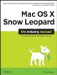
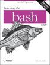
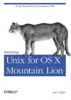
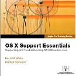

<!doctype html><html lang="en">

<!-- Mirrored from ss64.com/links/osx.html by HTTrack Website Copier/3.x [XR&CO'2014], Thu, 22 Nov 2018 11:39:44 GMT -->
<!-- Added by HTTrack --><meta http-equiv="content-type" content="text/html;charset=utf-8" /><!-- /Added by HTTrack -->
<head><meta charset="UTF-8">
<meta name=viewport content="width=device-width, initial-scale=1">
<link rel="STYLESHEET" href="../main.css" type="text/css">
<title>Apple OS X Books Software and Websites - SS64.com</title>
<style type="text/css">
.pic{box-shadow: 0px 1px 3px rgba(0, 0, 0, 0.3);}
</style>
</head><body>
<div id="tnav"><ul>
<li class="tbtn"><a href="../index.html"> ( &nbsp;SS64 &nbsp;)</a></li>
<li class="tbtn"><a href="../osx/index.html">OS X</a></li>
<li><div id="search"><form action="https://www.google.com/search" method="get">
<input type="text" name="q" id="q" size="27" maxlength="255">
<input class="submit" value="Search" id="btn" type="submit">
<input type="hidden" name="sitesearch" value="ss64.com"></form></div></li>
</ul></div>
<h1>Links to Apple Websites and Books</h1>
<p><a href="#help">Help</a>, <a href="#books">Books</a>, <a href="#apps">Applications</a> </p>
<h2><a id="news"></a>Apple.com</h2>
<blockquote>
<p><a href="https://developer.apple.com/download/more/">macOS Command Line Tools</a> - GCC and make<br>
<br>
<a href="https://support.apple.com/">Apple Support </a>- Knowledge Base.<br>
<a href="https://checkcoverage.apple.com/">Check coverage</a> - Find H/W details (AppleCare etc) from a serial no.<br>
<a href="https://developer.apple.com/library/mac/navigation/index.html">Developer.Apple.com</a> - macOS Documentation.<br>
<a href="https://developer.apple.com/documentation">Apple Developer Docs</a> - macOS Documentation.<br>
<a href="https://support.apple.com/downloads/combo">Apple Combo Updates</a> - Several macOS point releases in one download.<br>
<a href="https://support.apple.com/downloads/">Apple Support Downloads</a> - Patches,  Security updates, New and old versions of Apple software.<br>
<a href="https://www.opensource.apple.com/">Apple Open Source Reference Library</a><br>
<a href="https://developer.apple.com/fonts/">Apple Font Tool Suite</a> -  command line tools for working with <a href="https://support.apple.com/kb/HT5379">font</a> files.<br>
<a href="https://images.apple.com/education/docs/Apple-ClientManagementWhitePaper.pdf">Tips and Tricks for Mac Management</a> (2009, White Paper PDF)<br>
<a href="https://support.apple.com/manuals/">Apple Support Manuals</a><br>
<a href="https://support.apple.com/business-education">Business and Education Support</a><br>
<a href="https://www.icloud.com/">iCloud.com</a><br>
<a href="https://support.apple.com/en-us/HT201441">iPhone Activation Lock</a><br>
<a href="https://developer.apple.com/opensource/">Darwin Project</a> - Open Source at Apple.</p>
</blockquote>
<h2>bash versions for macOS</h2>
<blockquote>
<p>MacOS comes with bash version 3.2.57 from 2007 which is the last version released under GPL2 (Apple don't want to support <a href="http://www.ifross.org/en/what-difference-between-gplv2-and-gplv3">GPLv3</a>)</p>
<p>Apple do patch serious vulnerabilities in the version of bash they ship, but if you want something more up-to-date, you can keep the default bash install and add a second bash install from GNU or from a package manager like Macports or Homebrew. 
You can then change the Terminal.app profile to start this new bash shell.</p>
<p>Macports:<br>
<span class="code">sudo port install bash</span></p>
<p>Homebrew:<br>
<span class="code">brew install bash</span></p>
<p>To display the installed/current version:<br>
<span class="code">echo $BASH_VERSION<br>
bash --version</span></p>
</blockquote>
<h2>Hardware</h2>
<blockquote>
<p><a href="https://buyersguide.macrumors.com/#Mac">MacRumors Buyer's Guide</a> - product cycle summary for each Apple computer with buy recommendations.<br>
<a href="https://discussions.apple.com/welcome">Apple Support Communities</a><br>
<a href="https://selfsolve.apple.com/GetAgreements.do">AppleID</a> - AppleCare login.<br>
<a href="https://support.apple.com/kb/HT1874">AppleCare registration</a> (also buy AppleCare at <a href="http://www.ebay.com/">eBay</a>)<br>
<a href="https://www.youtube.com/user/rossmanngroup/videos">Louis Rossmann</a> - Right to Repair.<br>
<a href="http://dosdude1.com/software.html">Dosdude1</a> - Patcher to allow installation of macOS on older unsupported Macs.</p>
</blockquote>
<h2>News</h2>
<blockquote>
<p><a href="https://appleinsider.com/">AppleInsider</a><br>
<a href="https://www.cultofmac.com/">CultofMac</a><br>
<a href="https://daringfireball.net/">Daringfireball</a><br>
<a href="https://9to5mac.com/">9to5mac</a><br>
<a href="https://kensegall.com/blog/">Ken Segall</a> - Marketing blog.<br>
<a href="https://blog.malwarebytes.com/">The Safe Mac</a> - Malwarebytes advice.<br>
<a href="https://sixcolors.com/">SixColors</a> - Apple and other tech news and culture. <br>
<a href="https://apple.slashdot.org/">Apple.Slashdot</a><br>
<a href="https://hints.macworld.com/">MacOSXhints</a> - Archive of old Hints &amp; Tips, Q&amp;A<br>
<a href="https://www.macrumors.com/">MacRumors</a></p>
<p>Status: <a href="https://www.apple.com/support/systemstatus/">Apple Services, Stores, and iCloud</a>, <a href="https://developer.apple.com/support/system-status/">Dev Centre</a></p>
</blockquote>
<h2>Help &amp; Documentation<b><a id="help"></a> </b></h2>
<blockquote>
<p><a href="https://apple.stackexchange.com/">Apple.StackExchange.com </a><br>
<a href="http://hayne.net/MacDev/Notes/unixFAQ.html">Unix FAQ for OSX</a> - via the MacOSXHints forum.<br>
<a href="https://www.ifixit.com/Browse/Mac">ifixit.com</a> - Repair guides for Mac<br>
<a href="https://arstechnica.com/apple/2014/10/os-x-10-10/">John Siracusa review of Yosemite</a> 10.10<br>
<a href="https://google.github.io/styleguide/shell.xml">Google Shell Style guide</a> - some short, sensible advice on coding style.<br>
<a href="https://github.com/drduh/macOS-Security-and-Privacy-Guide">macOS Security and Privacy Guide</a> - Github<br>
<a href="http://www.osxfaq.com/Tutorials/LearningCenter/">OS X FAQ</a> - Unix Tutorials.<br> 
<a href="https://www.manpagez.com/man/">manpagez</a> -  Man Pages from Huntsville Mac Users Group.<br>
<a href="http://www.clindberg.org/projects/ManOpen.html">Man Open</a> - A GUI to find and open man pages.<br>
<a href="http://hayne.net/macosx.html">Hayne of Tintagel</a> - macOS FAQ and useful Bash scripts.<br>
<a href="http://home.earthlink.net/~strahm_s/manuals.html">Apple Manuals</a><br>
<a href="https://macscripter.net/">Mac Scripter</a> - Applescript Tutorials  &amp; forum.<br>
<a href="https://support.apple.com/kb/HT5781">Using Apple Diagnostics</a> (KB HT5781)<br>
<a href="https://support.apple.com/kb/HT4413">Migration Assistant</a> - transfer files from another Mac.<br>
<a href="http://www.robinwood.com/Catalog/Technical/OtherTuts/MacColorPicker/MacColorPicker.html">Colour Picker</a> - How to use the Mac colour picker.<br>
<a href="https://jsomers.net/blog/dictionary">Dictionary</a> - How to add Webster's 1913 dictionary to macOS.</p>
</blockquote>
<h2>macOS Books<a id="books"></a></h2>
<blockquote> 
<p> <a href="https://www.amazon.com/dp/1449330274?tag=ss64">  OSX: The Missing Manual, Mountain Lion Edition</a> <br>
<i>by David Pogue<br>
</i>The &quot;must have&quot; guide for all macOS users, Aug 2012.</p>
<p><a href="https://www.amazon.com/dp/0596009658?tag=ss64"> Learning the bash Shell</a> (O'Reilly 3rd edition)<br>
<i>by Cameron Newham</i><br>
Bash shell programming, flow control structures, job control.</p>
<p><a href="https://www.amazon.com/dp/059652062X?tag=ss64"> Mac OS X  for Unix Geeks</a><br>
<i>by Brian Jepson, Ernest E. Rothman</i><br>
The book to buy if you already know UNIX, Sept 2008.</p>
<p><a href="https://www.amazon.com/dp/1449332315?tag=ss64"> Learning Unix for OS X Mountain Lion: Going Deep With the Terminal and Shell</a> <br>
<i>By Dave Taylor</i><br>
Take a friendly tour of the Unix command line and 50 of the most useful utilities, Oct 2012.</p>
<p><a href="https://www.amazon.com/dp/0321887190?tag=ss64"> Apple Pro Training Series: OS X Support Essentials</a><br>
<i>by Kevin M. White<br>
</i>Apple-certified book on macOS Mountain Lion.</p>
<p><a href="http://newosxbook.com/index.php"><b>OS X Internals</b></a> by Jonathan Levin<br>
A 'Russinovich level' detailed reference to the kernel and internals of macOS.
Auditing, Authentication, the MAC Framework, Code Signing, Sandboxing, SIP, AMFI and more.</p>
<p><a href="https://www.amazon.com/dp/0596102119?tag=ss64">AppleScript : The Definitive Guide</a> <i>by Matt Neuburg</i><br>
An in-depth guide to AppleScript, 2nd Edition 2006.</p>
</blockquote>
<h2>Package Managers for macOS </h2>
<blockquote>
<p><a href="https://www.macports.org/">MacPorts</a><br>
A vastly larger number of packages available, owing to its maturity.<br>
Philosophy of keep everything fully separate, by default installs to <span class="code">/opt/local</span>, which usually needs to be created. <br>
It does not rely on   MacOS shipped libraries.<br>
MacPorts also be installed to your <a href="https://guide.macports.org/#installing.shell">home directory</a>, so multiple users of the machine can have different setups.<br>
To install GNU coreutils, the GNU tools will have a ‘g’ prefix - i.e. <span class="code">ls</span> will be <span class="code">gls</span>:<br>
<span class="code">sudo port install coreutils</span><br>
To install GNU coreutils and override (not replace) the default names: [<a href="https://hocuspokus.net/2008/01/a-better-ls-for-mac-os-x/">x</a>]<br>
<span class="code">sudo port install coreutils +with_default_names</span><br>
Written in TCL.</p>
<p><a href="https://brew.sh/">Homebrew</a><br>
By default installs  to <span class="code">/usr/local</span> though you should probably use something like <span class="code">~/Homebrew<br>
</span>Packages are generally one or two iterations behind MacPorts, due to their dependence on MacOS shipped libraries.<br>
Doesn't require sudo, geared towards ease of use.<br>
To install GNU coreutils [<a href="https://www.topbug.net/blog/2013/04/14/install-and-use-gnu-command-line-tools-in-mac-os-x/">x</a>]:<br>
<span class="code">brew install coreutils</span><br>
Hosted on <a href="https://github.com/Homebrew/">GitHub</a>,
written in  Ruby.</blockquote>
<h2>Deployment Tools</h2>
<blockquote>
<p><a href="http://www.deploystudio.com/">Deploy Studio</a> - Manage  large deployments of workstations and servers.
<p><a href="https://www.jamf.com/products/">Jamf</a> - Endpoint management for Apple devices.</blockquote>
<h2>Command Line tools</h2>
<blockquote>
<p><a href="http://newosxbook.com/tools/filemon.html?r">FileMon</a> - Log and respond to filesystem events.<br>
<a href="http://rudix.org/">Rudix</a> - A collection of pre-built Unix software delivered as packages for macOS by Rudá Moura.</p>
<p>Command Line Developer Tools for macOS<br>
Xcode, Additional Tools for Xcode, Font/Graphics/Hardware tools for XCode, ODBC Administrator Tool. <br>
To install, either run a command like <span class="code">gcc</span> or <span class="code">make</span> which will prompt to download if needed or explicitly run <span class="code">xcode-select --install</span> and then choose <b>Install</b> <br>
Alternatively, login to <a href="https://developer.apple.com/download/more/">https://developer.apple.com/download/more/</a> and download the DMG files directly, this is often faster.</p>
<p><a href="https://support.apple.com/kb/DL1433">OS X Recovery Disk Assistant</a> - Repair disks or reinstall macOS.</p>
</blockquote>
<h2><a id="apps"></a>Applications</h2>
<blockquote>
<p><a href="https://roaringapps.com/apps">App compatibility</a> matrix of 7,000+ apps from roaringapps.com</p>
</blockquote>
<blockquote>
<p><a href="https://www.abisource.com/">AbiWord</a> - Word Processor.<br>
<a href="https://flyingmeat.com/acorn/">Acorn</a> - Affordable Graphic Design.<br>
<a href="https://affinity.serif.com/en-us/designer/">Affinity Designer</a> - Graphic Design.<br>
<a href="https://affinity.serif.com/en-us/photo/">Affinity Photo</a> - Photo Editing.<br>
<a href="https://itunes.apple.com/us/app/airport-utility/id427276530">AirPort Utility</a> - Manage Wi-Fi network and AirPort base stations.<br>
<a href="https://github.com/tonsky/AnyBar">AnyBar</a> - A scriptable colour indicator for the macOS menubar.<br>
<a href="https://www.hairersoft.com/pro.html">Amadeus Pro</a> - Audio editor.<br>
<a href="http://angryip.org/download/#mac">Angry IP scanner</a> - network scanner for network administrators.<br>
<a href="https://freemacsoft.net/appcleaner/">AppCleaner</a>- Delete application/preference pane files.<br>
<a href="https://mathiasbynens.be/notes/shell-script-mac-apps">Appify</a> - Script that creates Mac apps from shell scripts.<br>
<a href="https://www.apple.com/remotedesktop/">Apple Remote Desktop</a> - Screen sharing plus remote install (Software Distribution).<br>
<a href="https://www.artrage.com/">ArtRage</a> - Paint tool for kids.<br>
<a href="https://ardour.org/">Ardour.org</a> - Record Multi-track digital audio.<br>
<a href="https://web.audacityteam.org/">Audacity </a> - Audio editor and Recorder.<br>
<a href="https://www.rogueamoeba.com/audiohijack/">AudioHijack</a> - Capture streaming audio.</p>
<p><a href="https://www.barebones.com/products/bbedit/">BBEdit</a> - Text Editor.<br>
<a href="https://www.binaryage.com/">BinaryAge</a> - TotalFinder, Spaces &amp; DS_Store management.<br>
<a href="https://bitcom.ch/">BitCom</a> FreeSee - Browse &amp; preview pics and graphics.<br>
<a href="https://www.blender.org/">Blender</a> - 3D graphics.<br>
<a href="http://www.bergdesign.com/brightness/">Brightness</a> - Brightness control.<br>
<a href="https://sourceforge.net/projects/simplyburns/files/">SimplyBurns</a> - Burn CDs &amp; DVD's.<br>
<p><a href="https://cabextract.org.uk/">cabextract</a> - Free Software for extracting Microsoft cabinet files<br>
<a href="https://www.bombich.com/">CarbonCopyCloner</a> - Clone/backup hard drive.<br>
<a href="https://lightheadsw.com/caffeine/">Caffeine</a> - Prevent your Mac from automatically going to sleep.<br>
<br>
<a href="https://www.alsoft.com/DiskWarrior/index.html">DiskWarrior</a> - Disk Repair.<br>
<a href="https://dougscripts.com/itunes/scripts/ss.php?sp=thistagthattag">Doug's Scripts</a> - This Tag That Tag - Swap/Copy iTunes metadata.<br>
<a href="https://www.mydvdedit.com//">MyDVDedit</a> - modify the content of a DVD.<br>
<a href="https://www.hyperbolicsoftware.com/DupeZap.html">DupeZap</a> - Search and remove duplicate files.</p>
<p><a href="https://red-sweater.com/fastscripts/">FastScripts</a> - run  scripts with a keyboard shortcut.<br>
<a href="https://www.ffmpeg.org/download.html">FFmpeg</a> -  Audio/video encoder.<br>
<a href="http://apps.tempel.org/FindAnyFile/">Find Any File</a> - Find files that Spotlight doesn't, includes bundles/packages/folders that are excluded from Spotlight search.<br>
<a href="http://www.finkproject.org/">Fink</a> - Open Source Games, Audio, Crypto and more.<br>
<a href="https://secure.flyingmeat.com/flysketch/">FlySketch</a> - Screen shots with selections/highlights etc<br>
</p>
<p>FTP - <a href="https://cyberduck.io/">Cyberduck</a><br>
FTP - <a href="https://www.panic.com/transmit/"> Transmit (Panic)</a><br>
<br>
<a href="https://macpaw.com/gemini">Gemini</a> - Duplicate file finder<br>
<a href="https://www.gimp.org/downloads/">Gimp</a> - GNU Image Manipulation Program.<br>
<a href="https://gpgtools.org/">GPG Tools</a> - Encryption for Apple Mail messages and files.<br>
<a href="https://www.lemkesoft.de/">Graphic Converter</a> - File format conversion and basic editing.<br>
<a href="http://grandperspectiv.sourceforge.net/">Grand Perspective</a> - Graphical disk usage utility<br>
<br>
<a href="https://handbrake.fr/">Handbrake</a> - DVD Ripper<br>
<a href="http://www.html-tidy.org/">HTML Tidy</a> - Check and fix HTML and XML files.<br>
</p>
<p><a href="https://itunes.apple.com/gb/app/ia-writer/id775737590?mt=12&amp;ign-itsct=775737590-775737590&amp;ign-itscg=0176&amp;ign-mpt=uo%3D4">iA Writer</a> - Distraction free word processor.<br>
<a href="https://macroplant.com/iexplorer">iExplorer</a> - Copy music to an iPhone or iPad in disk mode, (like  Android).<br>
<a href="https://www.imagemagick.org/">ImageMagick</a> - Edit/Convert bitmap images(PNG, JPEG, GIF) on the command line (<a href="http://www.fmwconcepts.com/imagemagick/index.php">scripts</a>)<br>
  <a href="https://imageoptim.com/mac">imageOptim</a> - Remove image metadata &amp; compress images without losing quality. (Free/Open Source)<br>
<a href="https://imazing.com/">Imazing</a> - transfer and save your music, messages, files and data.<br>
<a href="https://inkscape.org/en/">Inkscape</a> - Vector Graphics (Illustrator)<br>
<a href="https://www.apple.com/support/iphone/enterprise/">iPhone Enterprise support</a> - Apple.<br>
<a href="https://itunes.apple.com/us/app/apple-configurator/id434433123?mt=12">iOS configurator</a> - Mass configure and deploy iPhones and iPads.<br>
<a href="https://bjango.com/mac/istatmenus/">iStat Menus</a> - System Monitor.<br>
<a href="https://istumbler.net/">iStumbler</a> - Test WiFi &amp; Bluetooth connections.<br>
<a href="https://www.iterm2.com/">iTerm2</a> - Terminal with Search and Replay.<br>
<a href="http://macintoshhowto.com/itunes/importing-into-itunes.html">iTunes LAME encoder</a><br>
<a href="https://www.copytrans.net/copytransmanager/">iTunes - CopyTrans Manager</a> - Windows application that allows quick drag &amp; drop from PC to iDevices.
<p><a href="https://www.jamf.com/">Jamf</a> - Mobile Device Management software for Apple devices.<br>
<a href="https://support.apple.com/kb/dl1572">Java for OS X 2015-001</a> - Deprecated version of Java 6, typically required only for Adobe Apps.
<p><a href="https://pqrs.org/osx/karabiner/">Karabiner</a> - Keyboard customizer for macOS. <br>
<br>
<a href="http://softwares.bajram.com/utilities/#Full_Key_Codes">KeyCodes</a> - Display code for each keyboard key. <br>
<a href="https://itunes.apple.com/us/app/keynote/id409183694">Keynote</a> - Presentation software.<br>
<a href="https://freemacsoft.net/liteicon/">LiteIcon</a> - Change OS X finder icons.<br>
<a href="https://www.obdev.at/products/littlesnitch/index.html">Little snitch</a> - prevent applications 'dialling home' <br>
<p><a href="https://github.com/rgcr/m-cli">m-cli</a> - Command line administration of macOS.<br>
<a href="https://www.macupdate.com/app/mac/14414/mtr">MTR (Mac the Ripper)</a> - DVD Ripper.<br>
<a href="https://sbooth.org/Max/">Max</a> - Rip CD's in Maximum quality &amp; convert audio file formats.<br>
<a href="http://milgra.com/high-sierra-media-key-enabler.html">Media Key Enabler</a> (F8) for iTunes and Spotify in <i>High Sierra </i>.<br>
<a href="http://member.ipmu.jp/yuji.tachikawa/MenuMetersElCapitan/">Menu Meters</a>  - CPU, memory, disk &amp; Network activity [El Capitan version].<br>
<a href="https://github.com/zyedidia/micro">Micro</a> - Terminal-based text editor that aims to be easy to use and intuitive.</p>
<p><a href="http://nomoreitunes.einserver.de/">NoMoreiTunes</a> - Safari extension that preventing iTunes Preview and App Store pages from launching iTunes.<br>
<br>
<a href="https://www.libreoffice.org/">Open Office/Libre Office </a> - MS Office compatible productivity suite (Free).<br>
<a href="https://www.omnigroup.com/">OmniGroup</a> - Drawing/Diagrams, Dictionary, Outliner (note taking), Project Management.<br>
<a href="https://www.titanium-software.fr/en/index.html">OnyX</a> - Maintain and optimize macOS.<br>
<a href="https://www.apple.com/us/shop/product/MC573Z/A/mac-os-x-106-snow-leopard">OS X Snow Leopard</a> (10.6) for older computers.<br>
<a href="https://itunes.apple.com/app/os-x-el-capitan/id1147835434?mt=12">OS X El Capitan</a> (10.11.x) <br>
<a href="https://itunes.apple.com/us/app/macos-high-sierra/id1246284741?mt=12">macOS High Sierra</a> (10.13.x) <a href="https://support.apple.com/en-us/HT201475#requirements">requirements</a></p>
<p><a href="https://www.charlessoft.com/">Pacifist</a> - Open pkg /dmg files e.g. macOS install disks and extract files.<br>
<a href="http://www.parallels.com/">Parallels.com</a> - Run win 32 programs in parallel with macOS apps  (<a href="https://www.amazon.com/gp/product/B01KICH63S?ie=UTF8&amp;tag=ss64">Amazon link</a> )<br>
<a href="https://www.bluem.net/en/projects/pashua/">Pashua</a> - Aqua dialog windows for your scripts.<br>
<a href="https://www.pdflabs.com/tools/pdftk-server/">PDFtk</a> - Command-line tool for processing PDFs.<br>
<a href="http://www.ohanaware.com/permissionsreset/">PermissionsReset</a> - Fix macOS folder permissions.<br>
<a href="https://www.adobe.com/uk/products/photoshop-elements.html">Photoshop Elements</a> - Basic photo editing and organisation.<br>
<a href="https://www.cgsecurity.org/wiki/PhotoRec">PhotoRec</a> - Data recovery software  - hard disk, CD-ROM &amp; Memory Cards.<br>
<a href="https://www.picturecode.com/">PictureCode</a> - Noise Reduction.<br>
<a href="https://www.pixelmator.com/">Pixelmator</a> - Image editor (alternative to PhotoShop ) <br>
<a href="https://gpgtools.org/">PGP for Mac</a> - 
GPG Suite - secure communication and file encryption.<br>
<br>
<a href="https://qsapp.com/">Quicksilver</a> - App/document launcher.<br>
<a href="https://www.howtogeek.com/273359/teach-quick-look-to-preview-unsupported-videos-and-other-files-on-your-mac/">Quick Look  plugins</a> - Various - via howtogeek.com<br>
<a href="http://osxdaily.com/2013/06/02/quit-all-applications-mac-os-x/">Quit All Open Applications</a> - Automator.</p>
<p><a href="http://reederapp.com/mac/">Reeder</a> - RSS reader (compatible with <a href="https://feedly.com/i/pro">feedly</a>)<br>
<a href="http://reggyapp.com/">Reggy</a> - Regular Expression tester/viewer.<br>
Rename files - <a href="https://mrrsoftware.com/namechanger/">NameChanger</a> / <a href="http://manytricks.com/namemangler/">NameMangler</a> / <a href="http://www.publicspace.net/ABetterFinderRename/">ABetterFinderRename</a><br>
<a href="https://itunes.apple.com/gb/app/id284417350">Remote iOS app</a> - Control iTunes on a mac from a remote iPhone/iPad.<br>
<a href="https://itunes.apple.com/us/app/microsoft-remote-desktop/id715768417?mt=12">Remote Desktop for Mac</a> - Microsoft RDP  connect to Windows machines. Also <a href="https://www.royalapplications.com/ts/mac/features">Royal TS</a><br>
<a href="http://thelittleappfactory.com/ripit/">RipIt</a> - DVD Ripping,even  movies that trip up HandBrake or MacTheRipper.<br>
<a href="http://www.rubicode.com/Software/RCDefaultApp/">RCDefaultApp</a> - Set file associations.<br>
<br>
<a href="https://www.sequelpro.com/">Sequel Pro</a> - Web development (MySQL).<br>
<a href="http://www.peylow.se/screengrabber.html">ScreenGrabber</a> - Convert movie to stills.<br>
<a href="https://www.madrau.com/">SwitchResX</a> - Change Screen resolutions.<br>
<a href="https://www.literatureandlatte.com/scrivener/overview">Scrivener</a> - Writers studio (Outliner)<br>
<a href="https://www.shotcutapp.com/">Shotcutapp</a> - free, open source, cross-platform video editor.<br>
<a href="https://www.shinywhitebox.com/">ShinyWhiteBox</a> - Video capture (record Window/Desktop)<br>
<a href="http://www.dejal.com/simon/">Simon</a> - Server monitoring.<br>
<a href="https://www.corecode.io/smartreporter/">SMARTReporter</a> - HD monitor.<br>
<a href="https://www.peterborgapps.com/smultron/">Smultron</a> - Text editor with code highlighting.<br>
<a href="https://github.com/tomislav/osx-terminal.app-colors-solarized">Solarized theme</a> for macOS Terminal.<br>
<!-- entropy.ch -->
<a href="http://pcheese.net/software/soundstream/">SoundStream</a> - Screensaver.<br>
<a href="http://sox.sourceforge.net/">SoX</a> - Sound processing command line utility.<br>
<a href="https://totalspaces.binaryage.com/">TotalSpaces</a> - Spaces manager.<br>
<a href="http://www.squared5.com/">Squared5</a> - MPEG Streamclip video converter.<br>
<a href="http://startly.com/">Startly</a> - QuickKeys Macros.<br>
<a href="http://www5e.biglobe.ne.jp/~arcana/StartupSound/index.en.html">StartupSound</a> - Adjust volume of the boot chime.<br>
<a href="https://www.shirt-pocket.com/SuperDuper/SuperDuperDescription.html">SuperDuper</a> - Disk cloner, create a bootable recovery disk.<br>
<a href="https://swinsian.com/">Swinsian</a> - A better iTunes.</p>
<p><a href="https://www.teamviewer.com/">TeamViewer</a> - Screen sharing/Remote control (Mac/PC/Linux).<br>
<a href="https://www.telestream.net/">Telestream</a> - Screen recording/editing, pro media player/editor.<br>
<a href="https://tenderapp.com/">TenderApp</a> - Helpdesk.<br>
<a href="https://tclementdev.com/timemachineeditor/">TimeMachineEditor</a> - change the default one-hour backup interval of Time Machine.<br>
<a href="https://www.bresink.com/osx/TinkerTool.html">TinkerTool</a> - User interface tinkering.<br>
<a href="https://panic.com/transmit/">Transmit</a> - The best FTP client.<br>
<a href="https://www.tripmode.ch/">TripMode</a> - Bandwidth monitor for MacOS (for tethered laptops)<br>
<a href="http://tweaksapp.com/">TweaksApp</a> - Customise macOS (donation ware).<br>
<br>
<a href="https://scripts.sil.org/ukelele">Ukelele</a> - Keyboard Layout Editor.<br>
<a href="https://theunarchiver.com/">The UnArchiver</a> - A more capable replacement for &quot;Archive Utility.app&quot;  (BOMArchiveHelper) Free.<br>
<a href="https://panic.com/blog/the-future-of-unison/">Unison Newsgroup reader</a> - Now free.<br>
<a href="https://www.timdoug.com/unpkg/">Unpkg</a> - Tailor installation packages to allow manual install.<br>
<br>
<a href="https://www.vienna-rss.org/">Vienna</a> - RSS reader.<br>
<a href="https://github.com/macvim-dev/macvim">Vim for Mac</a> - Classic text editor.<br>
<a href="https://www.videolan.org/vlc/download-macosx.html">VLC Audio/Video Player</a> - MP3, wma, DVD, Flac etc.<br>
<a href="https://ulyssesapp.com/">Ulysses</a> - Writing app.<br>
<a href="https://www.tkn.tu-berlin.de/research/evalvid/">Video Codecs</a> - Handy list from the University of Berlin.<br>
<a href="https://www.vmware.com/products/fusion.html">VMWare Fusion</a> - Run Wintel &amp; Mac apps  side-by-side.<br>
<a href="https://www.hamrick.com/">VueScan</a> - Scanner Software.<br>
<br>
<a href="https://www.microsoft.com/windows/windowsmedia/player/mac/default.aspx">Windows Flip4Mac </a>- QuickTime plugin for Windows Media files (.wmv).<br>
<a href="https://manytricks.com/witch/">Witch</a> - Application/Window switcher.<br>
<a href="https://www.simonheys.com/wordclock/">World Clock</a> - Screensaver.<br>
<a href="http://www.hogbaysoftware.com/products/writeroom">WriteRoom</a> - Shareware text editor.<br>
<a href="https://theunarchiver.com/xee">Xee</a> - Image viewer (Preview replacement).<br>
<a href="http://tmkk.undo.jp/xld/index_e.html">X Lossless Decoder</a> - MP3 and FLAC audio decoder.<br>
<a id="tools"></a><a href="https://developer.apple.com/xcode/">Xcode Developer Tools package</a> - Apple programming tools and utilities for Mac, iPhone, and iPad.<br>
<a href="https://github.com/rg3/youtube-dl/">youtube-dl</a> - Downloading script.</p>
<p>Many of the commercial apps above are also available in the Apple App Store. Apple requires all App Store users to accept legal restrictions in the iTunes EULA and DRM (copy protection) buying software direct you will be subject to different terms of use.</p>
<p>Find more apps at <a href="https://www.macupdate.com/">MacUpdate.com</a> or <a href="https://tinyapps.org/osx.html">TinyApps</a></p>
<p>SS64 <a href="https://ss64.org/"> Discussion Forums</a> </p>
</blockquote>
<P class="quote"><i>&ldquo;Real artists ship&rdquo;  ~ Steve Jobs</a></i> (<a href="http://c2.com/cgi/wiki?RealArtistsShip">attr</a>)</p><!-- #BeginLibraryItem "/Library/foot_menu.lbi" --><hr>
<div id=bl class="footer">&nbsp;</div>
<div id=br class="footer, tagline">Copyright &copy; <a href="../index.html">SS64.com</a> 1999-2018<br>
Some rights reserved</div><!-- #EndLibraryItem --></body>

<!-- Mirrored from ss64.com/links/osx.html by HTTrack Website Copier/3.x [XR&CO'2014], Thu, 22 Nov 2018 11:39:45 GMT -->
</html>